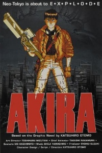

Akira (1988)
Japan, 1988. An explosion caused by a young boy with psychic powers tears through the city of Tokyo and ignites the fuse that leads to World War III. In order to prevent any further destruction, he is captured and taken into custody, never to be heard from again. Now, in the year 2019, a restored version of the city known as Neo-Tokyo-an area rife with gang violence and terrorism against the current government-stands in its place. Here, Shoutarou Kaneda leads "the Capsules," a group of misfits known for riding large, custom motorcycles and being in constant conflict with their rivals "the Clowns."
During one of these battles, Shoutarou's best friend Tetsuo Shima is caught up in an accident with an esper who finds himself in the streets of Tokyo after escaping confinement from a government institution. Through this encounter, Tetsuo begins to develop his own mysterious abilities, as the government seeks to quarantine this latest psychic in a desperate attempt to prevent him from unleashing the destructive power that could once again bring the city to its knees
During one of these battles, Shoutarou's best friend Tetsuo Shima is caught up in an accident with an esper who finds himself in the streets of Tokyo after escaping confinement from a government institution. Through this encounter, Tetsuo begins to develop his own mysterious abilities, as the government seeks to quarantine this latest psychic in a desperate attempt to prevent him from unleashing the destructive power that could once again bring the city to its knees